전기공사기사 (2013-09-28 기출문제)
1과목: 전기응용 및 공사재료
1. 금속전극의 분극전위에서 전극에 저항 물질이 생성되었을 때 이것을 극복해서 반응이 일어나기 위해 과잉전압이 요구되는 과전압은?
- 농도 과전압
- 천이 과전압
- 저항 과전압
- 결정화 과전압
(정답률: 82%)

2. 아크용접을 할 때 용접봉을 전원의 양극에 접속하고 피용접물을 음극에 접속하는 방식은?
- 직접 아크용접 방식
- 간접 아크용접 방식
- 정극(straight polarity)방식
- 역극(reverse polarity)방식
(정답률: 62%)
3. 15[℃]의 물 4[ℓ]를 용기에 넣고, 1[kW]의 전열기로 가열하여 90[℃]로 올리는데 30분이 소요되었다. 이 전열기의 효율은 약 몇 [%]인가/
- 83
- 69
- 54
- 34
(정답률: 78%)
4. 직류 전동기의 속도 제어법이 아닌 것은?
- 극수변환
- 전압제어
- 저항제어
- 계자제어
(정답률: 67%)
5. 농형 유도전동기의 기동법으로만 구성된 것은?
- Y-△ 기동법, 기동 보상기법, 리액터기동법
- 직입 기동법, Y-△ 기동법, 극수 변환법
- Y-△ 기동법, 2차 여자 제어법, 리액터기동법
- 직입 기동법, Y-△ 기동법, 2차 저항 제어법
(정답률: 84%)
6. 일반적으로 눈부심을 느끼는 광원의 휘도[cd/cm2] 한계는?
- 0.5
- 1.0
- 3.0
- 5.0
(정답률: 67%)
7. 반도체에 빛이 가해지면 전기 저항이 변화되는 현상은?
- 열진동효과
- 광전효과
- 지백효과
- 홀효과
(정답률: 89%)
8. 자기소호 기능이 가장 좋은 소자는?
- GTO
- SCR
- TRIAC
- RCT
(정답률: 87%)
9. 다음 중 전기차량의 대차에 의한 분류가 아닌 것은?
- 4륜차
- 보기차
- 연결차
- 전동차
(정답률: 81%)
10. 반사율 40[%]의 완전확산성 종이률 100[lx]의 조도로 비추었을 때, 종이의 광속발산도[lm/cm2]는?
- 40
- 0.4
- 0.04
- 0.004
(정답률: 51%)
11. 저압 옥내배선에 사용하는 전선의 굵기를 잘못 사용한 경우는?
- 단면적 1.0 [mm2]이상의 미네럴 인슈레이션케이블
- 단면적 1.5 [mm2]이상의 연동선
- 전광표시장치 또는 제어회로 배선에 단면적 0.75 [mm2]이상의 다심케이블
- 진열장 내의 배선공사에 단면적 0.75 [mm2]이상의 캡타이어케이블
(정답률: 57%)
12. 제1종 접지공사에서 연동선을 접지선으로 사용할 경우 접지선의 공칭단면적은 최소 [mm2]이상 이어야 하는가?(관련 규정 개정전 문제로 여기서는 기존 정답인 3번을 누르면 정답 처리됩니다. 자세한 내용은 해설을 참고하세요.)
- 2.5
- 8
- 6
- 16
(정답률: 77%)
13. 절연 컴파운드(insulating compound)를 사용하는 목적이 아닌 것은?
- 자외선으로부터의 도체의 파괴를 방지하기 위하여
- 표면을 피복하여 습기를 방지하기 위하여
- 고전압으로 인한 전리를 방지하기 위하여
- 고체 절연의 빈 곳을 메우기 위하여
(정답률: 65%)
14. 노즐 배관용 자재 중 유니버설 엘보의 부속품 종류에 해당되지 않는 것은?
- T형
- G형
- LL형
- LB형
(정답률: 73%)
15. 전선의 피복 절연물을 포함한 절연 전선을 금속관, 합성수지관에 넣을 경우 동일 전선과 굵기가 다른 전선의 관내 단면적은 각각 몇[%] 이하인가?(관련 규정 개정전 문제로 여기서는 기존 정답인 1번을 누르면 정답 처리됩니다. 자세한 내용은 해설을 참고하세요.)
- 동일전선 48[%], 굵기가 다른 전선 32[%]
- 동일전선 40[%], 굵기가 다른 전선 32[%]
- 동일전선 48[%], 굵기가 다른 전선 30[%]
- 동일전선 40[%], 굵기가 다른 전선 30[%]
(정답률: 82%)
16. 배선용 비닐 절연전선의 공칭 단면적[mm2]이 아닌 것은?
- 2.5
- 4
- 8
- 10
(정답률: 73%)
17. 배선용 차단기의 특징이 아닌 것은?
- 과부하 및 단락사고 차단 후 재투입이 가능하다.
- 개폐기구 및 트립장치 등이 절연물인 케이스에 내장되어 안전하게 사용 가능하다.
- 각 극을 동시에 차단하므로 결상의 우려가 없다.
- 별도장치 없이도 자동제어가 가능하다.
(정답률: 74%)
18. 다음 중 절연재료에서 직접적인 열화의 가장 큰 원인에 해당 되는 것은?
- 자외선
- 온도상승
- 산화
- 유전손
(정답률: 78%)
19. 특고압, 고압, 저압에 사용되는 완금(완철)의 표준길이[mm]에 해당되지 않는 것은?
- 900
- 1800
- 2400
- 3000
(정답률: 84%)
20. 알루미늄전선 접속시 가는 전선을 박스 안에서 접속하는데 사용하는 슬리브는?
- 종단겹침용 슬리브
- 매킹타이어 슬리브
- 직선겹침용 슬리브
- S형 슬리브
(정답률: 77%)
2과목: 전력공학
21. 전압을 n 배 승압하면 부하전력과 역률이 같을 때 전력손실과 전압강하율은 어떻게 되는가?
- 전력손실 : 1/n2, 전압강하율 1/n2
- 전력손실 : 1/n, 전압강하율 1/n
- 전력손실 : 1/n, 전압강하율 1/n2
- 전력손실 : 1/n2, 전압강하율 1/n
(정답률: 20%)
22. 송전선로의 일반회로 정수가 A=0.7, B=j190, D=0.9 라하면 C 의 값은?
- -j1.95×10-3
- j1.95×10-3
- -j1.95×10-4
- j1.95×10-4
(정답률: 19%)
23. ZCT에서 입력받아 동작하는 계전기는?
- OCR
- SGR
- OVR
- UVR
(정답률: 23%)
24. 길이 20 km, 전압 20 kV, 주파수 60 Hz인 1회선의 3상 지중송전선 정전용량이 0.5 ㎌/km 일 때, 이 송정선의 무부하 충전용량은 약 몇 kVA 인가?
- 1412
- 1508
- 1725
- 1904
(정답률: 17%)
25. 증기터빈 출력을 P[kW], 중기량을 W[t/h], 초압 및 배기의 증기 엔탈피를 각각 i0, i1 [kcal/kg]이라 하면 터빈의 nT [%]는?
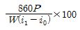
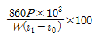
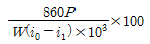
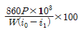
(정답률: 17%)
26. 기준 선간전압 23kV, 기준 3상 용량 5000 kVA, 1선의 유도 리액턴스가 15 Ω일 때 % 리액턴스는?
- 3.55 %
- 7.09 %
- 14.18 %
- 28.36 %
(정답률: 20%)
27. 변전소의 전력기기를 시험하기 위하여 회로를 분리하거나 계통의 접속을 바꾸거나 하는 경우에 사용되며, 여기에는 소호장치가 없어 고장전류나 부하전류의 개폐에는 사용할 수 없는 것은?
- 차단기
- 계전기
- 단로기
- 전력용 퓨즈
(정답률: 25%)
28. 다음 그림은 변류기의 접속도이다. 이와 같은 접속을 무슨 접속이라 하는가?
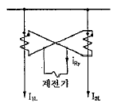
- 가동접속
- 직렬접속
- 병렬접속
- 차동접속
(정답률: 21%)
29. 송전로에 복도체를 사용하는 이유로 옳은 것은?
- 코로나를 방지하고 인덕턴스를 감소시킨다.
- 철탑의 하중을 평형화 한다.
- 선로의 진동을 없게 한다.
- 선로를 뇌격으로부터 보호한다.
(정답률: 26%)
30. 배전선의 전압조정장치가 아닌 것은?
- 유도전압조정기
- 승압기
- 주상변압기 탭 절환장치
- 리클로저
(정답률: 24%)
31. 배전선로에 3상3선식 비접지방식을 채용할 경우의 장점으로 볼 수 없는 것은?
- 1선 지락 고장시 고장전류가 적다.
- 1선 지락 고장시 인접 통신선의 유도장해가 적다.
- 변압기 1대 고장시 V결선이 가능하다.
- 1선 지락 고장시 건전상의 대지전위 상승이 적다.
(정답률: 20%)
32. 전등설비 250[kW], 전열설비 600[kW], 전동기 설비 350[kW], 기타 150[kW]인 수용기가 있다. 이 수용가의 최대 수용전력이 910[kW]이면 수용률 약 몇 [%]인가?
- 67.4
- 77.2
- 87.6
- 97.2
(정답률: 20%)
33. 속도 10 m/s로 흐르고 있는 물의 속도 수두는 약 몇 m 인가?
- 5.1 m
- 7.1 m
- 10.1 m
- 10.3 m
(정답률: 12%)
34. 정전용량 C[F]의 콘덴서 3개를 △결선해서 전압 V [v]를 가했을 때의 충전용량 [VA]은? (단, 전원주파는 f [Hz]이다.)
- 9×πfCV2
- 3×2πfCV2
- 3×2πfCV
- 4πfCV2
(정답률: 24%)
35. 가공선 계통은 지중선 계통보다 인덕턴스 및 정전용량이 어떠한가?
- 인덕턴스, 정전용량이 모두 작다.
- 인덕턴스, 정전용량이 모두 크다.
- 인덕턴스는 크고, 정전용량은 작다.
- 인덕턴스는 작고, 정전용량은 크다.
(정답률: 21%)
36. 송전선의 통신선에 대한 유도장해 방지대책이 아닌 것은?
- 전력선과 통신선과의 상호인덕턴스를 크게 한다.
- 전력선의 연가를 충분히 한다.
- 고장 발생시의 지락전류를 억제하고, 고장 구간을 빨리 차단한다.
- 차폐선을 설치한다.
(정답률: 20%)
37. 송전선로에 가공지선을 설치하는 목적은?
- 코로나 방지
- 뇌에 대한 차폐
- 선로정수의 평형
- 미관상 필요
(정답률: 23%)
38. 송전선로의 개폐 조작에 따른 개폐서지에 관한 설명으로 적합하지 않은 것은?
- 회로를 투입할 때 보다 개방할 때 더 높은 이상전압이 발생한다.
- 부하가 있는 회로를 개방하는 것보다 무부하를 개방할 때 더 높은 이상전압이 발생한다.
- 이상전압이 가장 큰 경우는 무부하 송전선로의 충전전류를 차단할 때이다.
- 이상전압의 크기는 선로의 충전전류 파고값에 대한 배수로 나타내고 있다.
(정답률: 15%)
39. 다음 중 조상설비가 아닌 것은?
- 동기조상기
- 분로리액터
- 비동기 조상기
- 상순 표시기
(정답률: 25%)
40. 전파정수 r, 특성임피던스 Z0, 길이 ℓ인 분포정수회로가 있다. 수전단에 이 선로의 특성임피던스와 같은 임피던스 Z0 를 부하로 접속하였을 때 송전단에서 부하측을 본 임피던스는?
- Z0
- 1/Z0
- Z0 tanhrℓ
- Z0 cothrℓ
(정답률: 15%)
3과목: 전기기기
41. 변압기 내부고장 보호에 쓰이는 계전기는?
- 브흐홀쯔 계전기
- 역상 계전기
- 과전압 계전기
- 접지 계전기
(정답률: 21%)
42. 4극 고정자 홈수 48인 3상 유도전동기의 흠 간격을 전기각으로 표시하면 어떻게 되는가?
- 3.75°
- 7.5°
- 15°
- 30°
(정답률: 20%)
43. 정격 부하로 운전 중인 3상 유도전동기의 전원 한선이 단선되어 단상이 되었다. 부하가 불변일 때 선전류는 대략 몇 배인가?
- √3 배
- 2/√3배
- 3배
- 3/2배
(정답률: 21%)
44. 3상 직권 정류자전동기에서 중간변압기를 사용하는 주된 이유가 아닌 것은?
- 고정자권선과 병렬로 접속해서 사용하며 동기속도 이상에서 역률을 100[%]로 할 수 있다.
- 전원전압의 크기에 관계없이 회전자 전압을 정류작용에 알맞은 값으로 선정할 수 있다.
- 중간변압기의 권수비를 바꾸어 전동기 특성을 조정할 수 있다.
- 중간변압기의 철심을 포화하면 경부하시 속도상승을 억제할 수 있다.
(정답률: 18%)
45. 동기리액턴스 Xs = 10[Ω], 전기자 권선저항 ra = 0.1[Ω] 3상 중 1상의 유도 기전력 E = 6400[V], 단자전압 V = 4000[V], 부하각 δ = 30° 이다. 비철극기인 3상 동기발전기의 출력[kW]은?
- 1280
- 3840
- 5560
- 6650
(정답률: 17%)
46. 1000[kW], 500[V]의 단중 중권의 직류분권발전기가 있다. 회전수 246[rpm]이고 슬롯수 192, 슬롯내부 도체수는 6이며 자극수가 12일 때 전부하에서의 자속[Wb]는? (단, 전기자저항은 0.0⑤[Ω]이고 브러시에서의 전압강하는 정부(正負)브러시 한조로 2[V]이다.)
- 약 0.098[Wb]
- 약 0.108[Wb]
- 약 0.138[Wb]
- 약 0.156[Wb]
(정답률: 16%)
47. 사이클로 컨버터에 대한 설명으로 틀린 것은?
- 주기적인 운전을 한다.
- 주파수를 변환한다.
- 입력은 직류이다.
- 출력은 교류이다.
(정답률: 18%)
48. 이상 변압기에서 2차측을 개방하고 1차측에 정현파전압 v= √2Vsinwt 를 인가하였을 때의 설명 중 옳은 것은?
- 여자전류는 1차 실효치 전압보다 π/2 늦거나 빠르다.
- 여자전류는 1차 실효치 전압과 동상이다.
- 여자전류는 1차 실효치 전압보다 π/2 빠르다.
- 여자전류는 1차 실효치 전압보다 π/2 늦다.
(정답률: 11%)
49. 스테핑 모터에 관한 설명으로 틀린 것은?
- 직류전원에 의해 운전된다.
- 피드백 신호가 반드시 필요하다.
- 위치결정 오차가 누적되지 않는다.
- 제어회로가 비교적 간단하다.
(정답률: 16%)
50. 두 동기 발전기의 유도 기전력이 2000[V], 위상차 60° 동기리액턴스 100[Ω]이다. 유효 동기화전류[A]는?
- 5
- 10
- 20
- 30
(정답률: 17%)
51. 직류 전동기 중에서 부하 변동이 심하고 큰 기동 토크가 요구되는 특성을 가진 기기에 주로 사용되는 전동기는?
- 분권 전동기
- 타여자 전동기
- 복권 전동기
- 직권 전동기
(정답률: 20%)
52. 단상 유도전동기에서 2 전동기설(two motor theory)에 관한 설명 중 틀린 것은?
- 시계방향 회전자계와 반시계방향 회전자계가 두 개가 있다.
- 1차 권선에는 교번자계가 발생한다.
- 2차권선 중에는 sf1과 (2-s)f1 주파수가 존재한다.
- 기동시 토크는 정격토크의 1/2 이 된다.
(정답률: 12%)
53. 출력 10[kVA], 정격 전압에서의 철손이 120[W], 뒤진역률 0.7, 3/4부하에서 효율이 가장 큰 단상 변압기가 있다. 3/4부하이고 역률 1일 때 최대 효율[%]은?
- 96.9
- 97.8
- 98.5
- 99.0
(정답률: 8%)
54. 전기자저항 0.1[Ω], 직권계자 권선저항 0.2[Ω]의 직권 직류전동기에 200[V]를 가하였더니 부하전류가 20[A]이었다. 이때 전동기의 속도는 약 몇 [rpm]인가? (단, 기계정수는 2.61이다.)
- 1288
- 1388
- 1488
- 1520
(정답률: 11%)
55. 동기전동기의 특징에 대한 설명으로 틀린 것은?
- 난조를 일으킬 염려가 없다.
- 회전속도가 일정하다.
- 제동권선이 필요하다.
- 직류전원이 필요하다.
(정답률: 19%)
56. 단상 전파 정류회로의 정류효율은?
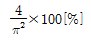
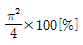
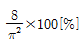
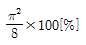
(정답률: 15%)
57. 전기자전류 Ia, 부하전류 I, 계자전류가 If 인 직류 직권전동기의 특성으로 맞는 것은?
- Ia = I > If
- Ia = If > I
- I = If > Ia
- Ia = I = If
(정답률: 16%)
58. 단상 주상 변압기의 2차 100[V] 단자에 1[Ω]의 저항을 접속하고 1차측에 전압을 900[V]를 가했을 때 1차 전류가 1[A]이었다. 이때 1차측의 탭의 전압은 몇 [V]의 단자에 접속하는가? (단, 변압기의 내부 임피던스 및 손실은 무시한다.)
- 2850
- 3000
- 3150
- 3300
(정답률: 12%)
59. 회전중인 유도전동기의 제동법이 아닌 것은?
- 회생 제동
- 발전 제동
- 역상 제동
- 3상 제동
(정답률: 23%)
60. 동기발전기의 전기자 권선법 중 집중권인 경우 매극 매상의 홈(slot) 수는?
- 1개
- 2개
- 3개
- 4개
(정답률: 20%)
4과목: 회로이론 및 제어공학
61. 그림과 같은 회로에서 a, b에 나타는 전압은?
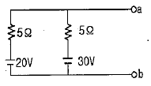
- 20[V]
- 23[V]
- 25[V]
- 26[V]
(정답률: 19%)
62. 대칭 3상 전압을 a상을 기준으로 했을 때 영상분 V0, 정상분 V1, 역상분 V2 의 합은?
- Va
- Va+1
- 0
- 1
(정답률: 17%)
63. 다음의 회로에서 t=0 일 때, 스위치 K를 열면서 정전류원을 연결하였다.
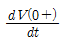
의 값은? (단, C의 초기전압은 0으로 가정한다.)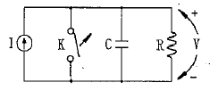
- 0
- I/C
- It/C
- C/I
(정답률: 16%)
64. 2차 시스템의 감쇠율(damping ratio) δ가 δ < 1 이면 어떤 경우인가?
- 비감쇠
- 과감쇠
- 발산
- 부족감쇠
(정답률: 24%)
65. 2단자 회로망에 그림과 같은 단위계단 전압을 인가하였을 때 흐르는 전류가 I(t)=2e-t+3e-2t[A] 이었다. 이때 이 2단자 회로망의 구성은 어떻게 되겠는가?
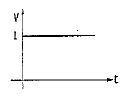
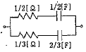
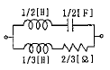
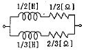
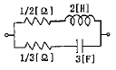
(정답률: 10%)
66. 그림과 같은 파형의 파고율은?
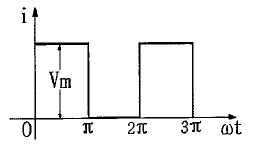
- 1
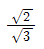
- √2
- √3
(정답률: 17%)
67. 대칭 5상 기전력의 선간전압과 상간전압의 위상차는 얼마인가?
- 27°
- 36°
- 54°
- 72°
(정답률: 20%)
68. 단상 유도부하 R+jwL[Ω]에 정전용량 C[F]을 병렬로 접속하여 회로의 역률을 1로 만들었다. 이 경우의 C의 값은?
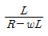
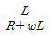
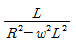
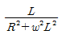
(정답률: 14%)
69. 분포정수 회로가 무왜선로로 되는 조건은? (단, 선로의 단위 길이당 저항은 R, 인덕턴스는 L, 정전용량은 C, 누설 콘덕턴스는 G이다.)
- RL=CG
- RC=LG
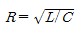
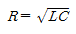
(정답률: 23%)
70. 다음과 같은 함수 f(t)를 라플라스 변환하면?
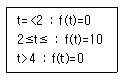
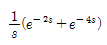
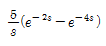
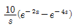
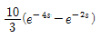
(정답률: 17%)
71. s2+5s+25=0의 특성 방정식을 갖는 시스템에서 단위계단 함수 입력시 최대 오버슈트(maximum overshoot)가 발생하는 시간은 약 몇 [sec] 인가?
- 0.726
- 1.451
- 2.902
- 0.363
(정답률: 8%)
72. 진상보상기의 특성에 대한 설명으로 잘못 된 것은?
- 제어계 응답의 속응성을 좋게 한다.
- 이득을 향상시켜 정상 오차를 개선한다.
- 공진 주파수의 특성을 그대로 두면서 저주파 영역의 이득을 높인다.
- 저주파수에서는 이득이 낮았다가 고주파에서는 이득이 커진다.
(정답률: 11%)
73. Nyquist 선도에서 이득여유가 40[dB]이고 위상여유가 50° 이다. 이 시스템의 안정 여부는?
- 안정 상태이다.
- 불안정 상태이다.
- 임계 상태이다.
- 판정 불능 상태이다.
(정답률: 21%)
74. 계의 특성상 감쇠계수가 크면 위상여유가 크고 감쇠성이 강하여 (A)는(은) 좋으나 (B)는(은) 나쁘다. 괄호안의 A, B를 올바르게 묶은 것은?
- 이득여유, 안정도
- 오프셋, 안정도
- 응답성, 이득여유
- 안정도, 응답성
(정답률: 19%)
75. 다음 블록선도를 옳게 등가변환 한 것은?
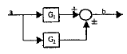
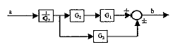
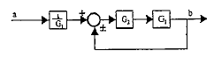
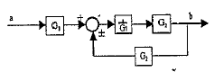
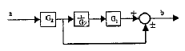
(정답률: 14%)
76. 어떤 시스템의 전달함수 G(s)가
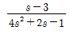
로 표시될 때 이 시스템에 입력 x(t)를 가했을 때 출력 y(t)를 구하는 미분 방정식은? (단, 모든 초기조건은 0 이다.) (문제 오류로 실제 시험에서는 모두 정답처리 되었습니다. 여기서는 1번을 누르면 정답 처리 됩니다.)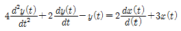
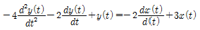
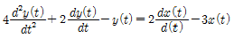
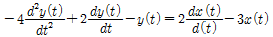
(정답률: 18%)
77. 그림과 같은 블록선도에서 전달함수 C(s)/R(s)를 구하면?
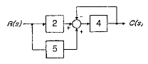
- 1/8
- 5/28
- 28/5
- 8
(정답률: 20%)
78. 안정된 제어계의 특성근이 2개의 공액 복소근을 가질 때, 이 근들이 허수축 가까이에 있는 경우 허수축에서 멀리 떨어져 있는 안정된 근에 비해 과도응답 영향은 어떻게 되는가?
- 과도응답이 같다.
- 과도응답은 천천히 사라진다.
- 과도응답이 빨리 사라진다.
- 과도응답에는 여향을 미치지 않는다.
(정답률: 17%)
79. 그림과 같은 회로의 출력 Z는 어떻게 표현되는가?
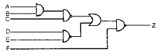
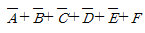
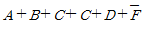
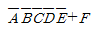
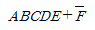
(정답률: 20%)
80. 상태방정식 x=A·x+B·y, y=C·x에서 특성방정식을 구하면? (단,
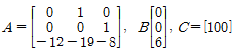
이다.)- s3+8s2+19s+12=0
- s3+12s2+19s+8=0
- S3+12s2+19s+8=6
- s3+8s2+19s+12=6
(정답률: 10%)
5과목: 전기설비기술기준 및 판단기준
81. 사용전압이 30kV 이하인 울타리·담 등과 고압 및 특고압의 충전부분이 접근하는 경우에는 울타리·담 등의 높이와 울타리·담 등으로부터 충전부분까지의 거리는 최소 몇 [m]이상이어야 하는가?
- 4
- 5
- 6
- 7
(정답률: 19%)
82. 비행장 등화배선으로 차량 기타 중량율의 압력을 받을 우려가 없는 장소에 저압 또는 고압 배선을 직접 매설식으로 하는 경우로 옳은 것은?
- 매설 깊이는 항공기 이동지역에서 30㎝ , 그 밖의 지역에서 50㎝ 이상으로 할 것
- 매설 깊이는 항공기 이동지역에서 50㎝ , 그 밖의 지역에서 75㎝ 이상으로 할 것
- 매설 깊이는 항공기 이동지역에서 60㎝ , 그 밖의 지역에서 1.0m 이상으로 할 것
- 매설 깊이는 항공기 이동지역에서 60㎝ , 그 밖의 지역에서 1.2m 이상으로 할 것
(정답률: 13%)
83. 도로에 시설하는 가공 직류 전차선로의 경간은 몇 [m] 이하로 하여야 하는가?
- 40
- 50
- 60
- 70
(정답률: 18%)
84. 가반형의 용접 전극을 사용하는 아크 용접장치의 용전변압기의 1차측 전로의 대지전압은 몇 [V] 이하이어야 하는가?
- 60
- 150
- 300
- 400
(정답률: 25%)
85. 저압 옥내간선에서 분기하여 전기사용기계기구에 이르는 저압옥내전로를 시설할 때 저압옥내 전로의 정격전류가 15A 이하인 과전류차단기로 보호되는 것에서는 정격전류가 몇 [A] 이하인 콘센트를 사용하여야 하는가?
- 15
- 20
- 30
- 50
(정답률: 19%)
86. 제3종 특고압 보안공사는 다음의 어느 경우에 해당하는 것인가?
- 특고압 가공전선이 건조물과 제1차 접근상태로 시설되는 경우
- 35kV 이하인 특고압 가공전선이 건조물과 제2차 접근상태로 시설되는 경우
- 35kV 를 넘고 170kV 미만의 특고압 가공전선이 건조물과 제2차 접근상태로 시설되는 경우
- 170kV 이상의 특고압 가공전선이 건조물과 제2차 접근상태로 시설되는 경우
(정답률: 16%)
87. 가공전선로의 지지물에 취급자가 오르고 내리는데 사용하는 발판 볼트 등은 지표상 몇 [m] 미만에 시설하여서는 아니 되는가?
- 1.2
- 1.5
- 1.8
- 2.0
(정답률: 24%)
88. 옥내에 시설하는 고압용 이동전선으로 가장 알맞은 것은?
- 6 mm 연동선
- 고무절연 캡타이어 케이블
- 고압용의 캡타이어 케이블
- 옥외용 비닐절연전선
(정답률: 18%)
89. 발전소에서 개폐기 또는 차단가에 사용하는 공기압축기는 최고 사용압력의 몇 배의 수압으로 계속 10분간 견디고 새지 아니하여야 하는가?
- 1.1
- 1.25
- 1.5
- 2
(정답률: 19%)
90. 발열선을 도로, 주차장 또는 조영물의 조영재에 고정시켜 시설하는 경우, 발열선에 전기를 공급하는 전로의 대지전압은 몇 [V] 이하 이어야 하는가?
- 220
- 300
- 380
- 600
(정답률: 24%)
91. 직선형의 철탑을 사용한 특고압 가공전선로가 연속하여 10기 이상 사용하는 부분에는 몇 기 이하마다 내장애자장치가 되어 있는 철탑 1기를 시설하여야 하는가?
- 5기
- 10기
- 15기
- 20기
(정답률: 24%)
92. 혼촉 사고시에 2초 안에 자동 차단되는 22.9kV전로에 결합된 변압기 저압측의 전압이 220V인 제2종 접지 저항값[Ω]은? (단, 특고압측 1선 지락전류는 30A라 한다.)
- 5
- 10
- 15
- 20
(정답률: 17%)
93. 기구 등의 전로의 절연내력 시험에서 최대 사용전압이 60kV를 초과하는 기구 등의 전로로서 중성점 비접지식전로는 최대 사용전압의 몇 배의 전압에 10분간 견디어야 하는가?
- 1.5
- 1.25
- 0.92
- 0.72
(정답률: 17%)
94. B종 철주를 사용하는 특고압 가공전선로의 경간을 500m 이하로 하고자 하는 경우에 사용되는 경동연선의 최소 굵기[mm2]는?
- 35
- 55
- 100
- 155
(정답률: 21%)
95. 100kV 미만인 특고압 가공전선로를 인가가 밀집한 지역에 시설할 경우, 전선로에 사용되는 전선은 인장강도 21.67kN 이상의 연선 또는 단면적이 몇 [mm2] 이상의 경동연선이어야 하는가?
- 38
- 55
- 100
- 150
(정답률: 21%)
96. 전로의 보호 장치의 확실한 동작을 위해 전로의 중성점을 접지하는 경우, 접지선으로 연동선을 사용한다면 공칭단면적은 몇 [mm2] 이상인가?
- 6
- 8
- 16
- 22
(정답률: 15%)
97. 저압 옥내배선의 합성수지관 공사에 대한 설명으로 틀린 것은?
- 전선은 옥외용 비닐절연전선을 제외한 절연전선을 사용하여야 한다.
- 관 상호간 및 박스와는 관을 삽입하는 깊이는 관 바깥지름의 1.2배 이상으로 한다.
- 관의 지지점간 거리는 2m 이하로 한다.
- 습기가 많은 장소에 시설하는 경우에는 방습장치를 한다.
(정답률: 19%)
98. 애자사용 공사에 의한 저압 옥내배선공사를 할 때 전선의 지지점간의 거리는 몇 [m]이하로 하여야 하는가? (단, 전선은 조영재의 옆면을 따라 붙였다고 한다.)
- 2
- 3
- 4
- 5
(정답률: 20%)
99. 저압 가공인입선 시설 시 도로를 횡단하여 시설하는 경우 노면상 높이는 일반적인 경우 몇 [m] 이상으로 하여야 하는가?
- 4
- 4.5
- 5
- 5.5
(정답률: 21%)
100. 전력보안 · 통신용 전화설비를 시설하지 않아도 되는 곳은?
- 사용전압 35kV 이하의 원격감시제어가 되지 아니하는 변전소에 준하는 곳
- 동일 수계에 속하고 보안상 긴급연락의 필요가 있는 수력발전소 상호간
- 수력설비의 보안상 필요한 양수소 및 강수량 관측소와 수력발전소간
- 2 이상의 급전소 상호간과 이들을 총합 운용하는 급전소간
(정답률: 14%)